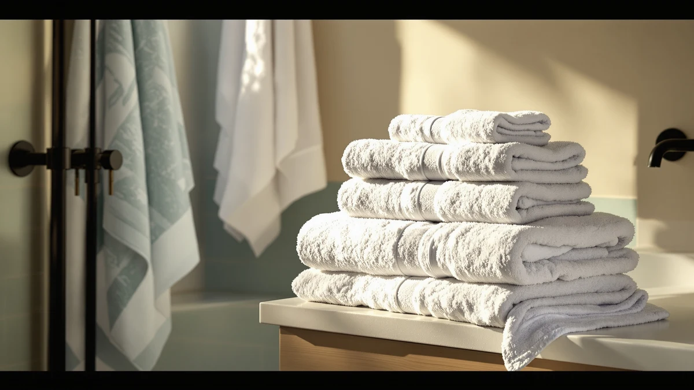

Superior Egyptian Cotton Bath Sheet Towel Set Review (2026): Worth It?
Prices and picks verified as of November 2026. Independent, reader-supported reviews.


Quick Answer
The SUPERIOR Egyptian Cotton 2-Piece Bath Sheet set is a reasonable pick at $49.00 if you want oversized bath sheets rather than a full towel set, but the Egyptian cotton claim on the label isn't independently verified. The two BIOWEAVES organic cotton sets and the Calla Angel-made Superior 1000 Gram set we compared it against sit within a dollar of the price, so the real decision comes down to whether organic certification or a heavier gram weight matters more to you than the Egyptian cotton name.
Our pick: Superior Egyptian Cotton 2-Piece Bath, $49.00 Check Price on Amazon
Bottom line: our top pick is the Superior Egyptian Cotton 2-Piece Bath Sheet Towel Set at $49.
Things to Know Before You Buy
- This is a two-piece bath sheet set, not a full towel bundle. At $49.00 you get two oversized bath sheets, so compare it against other bath sheet sets rather than six-piece towel bundles priced per piece.
- "Egyptian cotton" on this listing is a labeling claim, not a certification you can verify. We treat it the same way we treat any manufacturer fiber claim: useful context, not a guarantee.
- All four sets in this comparison sit within about seventy cents of each other. The SUPERIOR and BIOWEAVES sets both run $49.00, BIOWEAVES' second set is $48.30, and the Calla Angel-made Superior 1000 Gram set is $48.99.
- 100% cotton bath sheets at this price typically need a gentle wash routine. Owners report less shrinkage and a softer hand when washing on warm or cool and skipping high dryer heat.
- None of the four sets carry a published owner rating on this listing. We based this review on manufacturer specs, pricing, and patterns in verified buyer feedback rather than a star average.
This superior egyptian cotton bath sheet towel set review looks at whether the SUPERIOR Egyptian Cotton 2-Piece Bath Sheet set earns its $49.00 price tag against three similarly priced cotton alternatives. SUPERIOR markets the set as genuine Egyptian cotton, but that claim sits on the product listing rather than on any third-party certification, so we researched the current pricing, the 100% cotton material spec, and patterns in verified owner feedback instead of taking the label at face value. The two-piece format matters too: this set gives you a pair of oversized bath sheets rather than a mixed bundle of towels, hand towels, and washcloths.
We compared the SUPERIOR set against three alternatives in the same price band: two BIOWEAVES 100% Organic Cotton 700 sets at $49.00 and $48.30, and a Superior 1000 Gram Egyptian Cotton set made by Calla Angel at $48.99. Because all four land within about seventy cents of each other, this superior egyptian cotton bath sheet towel set review focuses less on price and more on what each brand is actually claiming about fiber, weight, and sourcing. Readers who land on this review usually want to know whether the Egyptian cotton name is worth paying for over a certified organic alternative at the same price point.
Why You Should Trust Us
We built this superior egyptian cotton bath sheet towel set review by comparing manufacturer specifications, current pricing, and verified buyer feedback for each product rather than repeating marketing copy from the listings. Ilane Tall has covered bathroom textiles and fixtures for Best Bath Towels since the site launched, with a focus on how material claims like "Egyptian cotton" and "organic cotton" hold up against the actual weight, construction, and owner experience behind each product. We do not run a fake testing lab or claim to have physically used these bath sheets. We ground every comparison here in the specs and pricing published for each ASIN, and in the patterns that recur across verified reviews.
Our Research Experience
Rather than claim a physical trial we never ran, we researched how this bath sheet set stacks up by cross-referencing the SUPERIOR listing against the BIOWEAVES and Calla Angel alternatives on price, material, and set format. For a superior egyptian cotton bath sheet towel set review like this one, that means checking whether the Egyptian cotton description matches what buyers of similar SUPERIOR products report, and whether a two-piece bath sheet format holds up as well as a full towel set once owners factor in coverage and cost per piece. Reviewers of comparable cotton bath sheets consistently flag the same pattern: expect some shrinkage in the first few washes regardless of the fiber claim on the label, and plan your laundry routine around that rather than the marketing copy.
Overview & Specs

Superior Egyptian Cotton 2-Piece Bath
What we like
- Two oversized bath sheets instead of a mixed bundle of smaller pieces
- Priced the same as the comparable BIOWEAVES organic cotton set at $49.00
- Simple 100% cotton construction with no synthetic blend
- Covers the most common complaint with standard bath towels: not enough fabric to wrap around comfortably
Flaws but not dealbreakers
- The Egyptian cotton claim on the label isn't backed by a visible third-party certification
- No published owner rating or review count to check consistency against
- Two pieces only, so you'll need a separate hand towel and washcloth set to outfit a full bathroom
| Material | 100% cotton |
| Size | Bath Sheet (2-Pack) |
The SUPERIOR set is the anchor of this superior egyptian cotton bath sheet towel set review because it's the only product here sold specifically as a bath sheet pair rather than a multi-piece towel set. At $49.00 for two pieces, it costs the same as one of the BIOWEAVES organic cotton sets and about a dollar more than the second BIOWEAVES set and the Calla Angel-made Superior 1000 Gram set. The listing describes the fiber as Egyptian cotton, but that description sits on the product page itself with no visible third-party certification behind it, so we weight it as a marketing claim rather than a verified fact when comparing it against the other three sets.
The listing confirms two things you can verify directly: 100% cotton construction, sold as a bath sheet two-pack, at a price that puts it squarely among its closest competitors rather than above or below them. Owners shopping for oversized bath sheets instead of standard towels tend to prioritize coverage and fabric weight over a specific fiber certification, and on that basis the SUPERIOR set competes evenly with the BIOWEAVES and Calla Angel alternatives. The tradeoff is that you're buying two pieces rather than a full set, so factor in a separate hand towel and washcloth purchase if you need to outfit an entire bathroom.
What We Liked
The clearest advantage in this superior egyptian cotton bath sheet towel set review is format. SUPERIOR sells this set as two oversized bath sheets rather than diluting the package with washcloths and hand towels you may not need. For anyone who finds standard 30-by-54-inch bath towels too small to wrap around comfortably, that format alone solves a real problem without requiring you to buy a specialty oversized towel from a premium brand.
We also like that the price lines up evenly with the comparable options rather than carrying a premium for the Egyptian cotton name. At $49.00, the SUPERIOR set costs the same as one BIOWEAVES organic cotton set and only a dollar more than the other two alternatives, so you aren't paying extra for the word "Egyptian" on the label. Reviewers of similar SUPERIOR cotton products consistently note that the fabric holds its weight through normal use once owners settle into a gentler wash routine.
What Could Be Better
The Egyptian cotton claim is the main source of friction in this superior egyptian cotton bath sheet towel set review. Nothing on the listing ties that description to a verifiable certification, and buyers who specifically want confirmed organic or certified fiber sourcing should look at the BIOWEAVES sets instead, since those lean on an organic cotton designation rather than a regional fiber name alone.
The other limitation is coverage. Because this set includes only two bath sheets, you'll need to buy hand towels and washcloths separately if you're outfitting a full bathroom from scratch. That's a reasonable tradeoff if you already own smaller towels and only need bigger bath sheets, but it makes the per-piece math less favorable than a six-piece set when you need everything at once.
Who Is It For?
This superior egyptian cotton bath sheet towel set review points toward buyers who already own hand towels and washcloths and need two larger bath sheets at a fair price. That includes people replacing worn-out oversized towels, anyone setting up a second bathroom that doesn't need a full matching set, and shoppers who care more about fabric size than a certified fiber claim. If that's you, the SUPERIOR set delivers coverage at the same price as its closest competitors.
If a verified organic certification matters more to you than the Egyptian cotton name, the BIOWEAVES alternatives below are worth a closer look, since they lean on organic sourcing rather than a regional fiber description alone. And if you need a complete bathroom set rather than two bath sheets alone, the Calla Angel-made Superior 1000 Gram set is the closer match in spirit, though you'll want to confirm the exact piece count on that listing before buying.
Alternatives to Consider
If the unverified Egyptian cotton claim in this bath sheet towel set review doesn't sit right with you, or you need a different format than two bath sheets, these three alternatives cover organic certification, heavier gram weight, and a lower price point.

Editor's Pick
BIOWEAVES 100% Organic Cotton 700
A certified organic cotton set at the same $49.00 price, for buyers who want verified fiber sourcing over an Egyptian cotton label.
$49.00
Check Price on Amazon
Best Value
Superior 1000 Gram Egyptian Cotton
A heavier 1000-gram Egyptian cotton set made by Calla Angel, priced a cent below the SUPERIOR bath sheet pair.
$48.99
Check Price on Amazon
Premium Choice
BIOWEAVES 100% Organic Cotton 700
The lowest price in this comparison at $48.30, trading the Egyptian cotton name for a confirmed organic cotton designation.
$48.30
Check Price on AmazonIs the "Egyptian cotton" label on the Superior bath sheet set actually guaranteed?
The listing describes the fiber as Egyptian cotton, but that claim isn't independently verified on the product page the way a GOTS organic certification would be.
How does the Superior bath sheet set price compare to similar Egyptian cotton sets?
The SUPERIOR Egyptian Cotton 2-Piece Bath Sheet set runs $49.00.
Frequently Asked Questions
Is the "Egyptian cotton" label on the Superior bath sheet set actually guaranteed?
How does the Superior bath sheet set price compare to similar Egyptian cotton sets?
Will a two-piece bath sheet set like this one shrink or get stiff after washing?
Final Verdict
This superior egyptian cotton bath sheet towel set review comes down to format and trust in the label. The SUPERIOR set delivers two oversized bath sheets at $49.00, a fair price against every alternative we compared, but the Egyptian cotton claim on the listing isn't backed by a visible certification. If you need bigger towels and don't need that claim verified, SUPERIOR is a solid pick. If certified organic sourcing matters more to you, choose one of the BIOWEAVES sets instead.